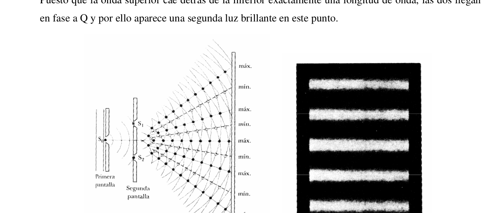
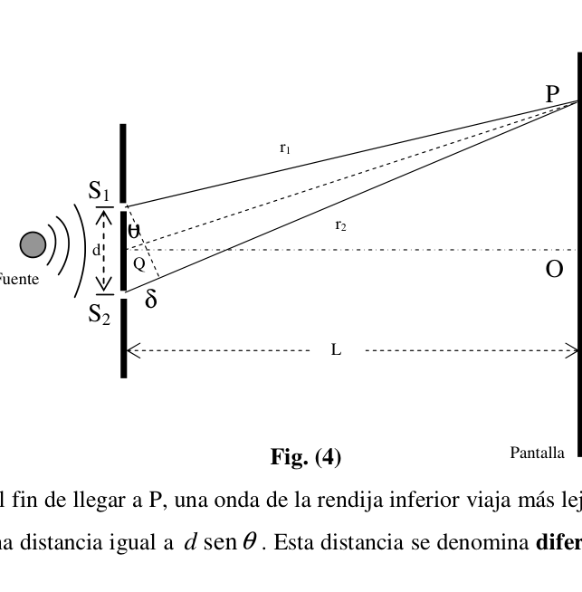
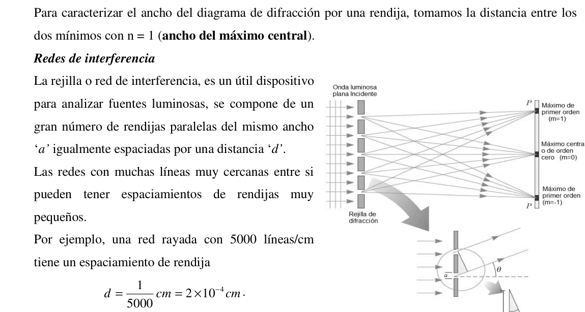
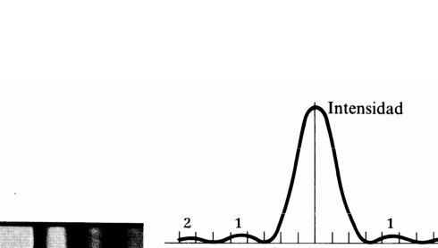

Separacion de rendijas de un CD por difraccion
PE42. Rosario, Santa Fe. Verde. Introduccion teorica Interferencia de ondas luminosas Dos ondas pueden sumarse constructiva o destructivamente. En la interferencia constructiva, la amplitud de la onda resultante es mayor que la de cualquiera de las ondas individuales. Las ondas luminosas también interfieren entre sí. Fundamentalmente toda interferencia asociada a ondas luminosas surge cuando se combinan los campos electromagnéticos que constituyen las ondas individuales. Para observar interferencia sostenida en ondas luminosas, deben cumplirse las siguientes condiciones: • Las fuentes deben ser coherentes, es decir, deben mantener una fase constante entre sí. • Las fuentes deben ser monocromáticas, es decir, de una sola longitud de onda. 1 2 ˆ. ˆ. n n r sen i sen
i r N Rayo incidente Rayo refractado n1 Superficie de separación n2
-
170 - • Debe aplicarse el principio de superposición. Describiremos ahora las características de las fuentes coherentes. Al igual que sucede con las con las ondas mecánicas, se necesitan al menos dos fuentes (que producen dos ondas viajeras) para crear interferencia. Con el fin de producir un patrón de interferencia estable, las ondas individuales deben mantener una relación de fase constante entre sí. Cuando este es el caso, se dice que las fuentes son coherentes.
Si dos fuentes luminosas se colocan una al lado de la otra, no se observan efectos de interferencia debido a que las ondas luminosas de una fuente se emiten independientemente de la otra; por lo tanto, las emisiones de las dos fuentes no mantienen una relación de fase constante entre sí durante el tiempo de observación. La luz de una fuente de luz ordinaria experimenta cambios aleatorios por lo menos una vez cada 10-8 s. En consecuencia, las condiciones para interferencia constructiva, destructiva o algún estado intermedio dura tiempos del orden de 10-8 s. El resultado es que no se observan efectos de interferencia debido a que el ojo no puede seguir estos cambios de corto tiempo. Se dice que dichas fuentes luminosas son incoherentes. Un método común para producir fuentes de luz coherentes es emplear una fuente monocromática para iluminar una pantalla que contiene dos pequeñas aberturas (usualmente en forma de rendijas). La luz que emerge de una de las dos rendijas es coherente debido a que una sola fuente produce el haz luminoso original y las dos rendijas sirven solo para separar el haz original en dos partes (lo cual, después de todo, fue lo que se hizo con la señal sonora de los altavoces de lado a lado). Todo cambio aleatorio en la luz emitida por la fuente ocurrirá en ambos haces al mismo tiempo, y como resultado es posible observar efectos de interferencia. Experimento de la doble rendija de Young La interferencia en ondas luminosas de dos fuentes fue demostrada por primera vez por Thomas Young en 1801. Un diagrama esquemático del aparato que utilizó en este experimento se muestra en la figura (1). Incide luz sobre una pantalla, en la cual hay una estrecha rendija S0. Las ondas que emergen de esta rendija llegan a una segunda pantalla, que contiene dos rendijas estrechas y paralelas, S1 y S2. Estas dos rendijas sirven como un par de fuentes de luz coherente debido a que las ondas que emergen de ellas se originan del mismo frente de onda y, en consecuencia, mantienen una relación de fase constante.
La luz de las dos rendijas produce sobre la pantalla C un patrón visible de bandas paralelas brillantes y oscuras denominadas franjas. Cuando la luz de S1 y la de S2 llegan a un punto sobre la pantalla C en forma tal que ocurra interferencia constructiva en ese punto, aparece una línea brillante. Cuando la luz de las dos rendijas se combina destructivamente en cualquier punto sobre la pantalla, se produce una línea oscura (Figura 2). La figura (3) es un diagrama esquemático de algunas de las maneras en que dos ondas pueden combinarse en la pantalla. En la figura (3-a), las dos ondas, que salen en fase de las dos rendijas incide sobre la pantalla en el punto central P. Puesto que estas ondas viajan igual distancia, llegan a P en fase, -
171 - y como resultado, hay interferencia constructiva en ese punto y se observa un área brillante. En la figura (3-b), las dos ondas luminosas también empiezan en fase, pero ahora la onda superior tiene que recorrer una longitud de onda más que la onda inferior para alcanzar el punto Q sobre la pantalla. Puesto que la onda superior cae detrás de la inferior exactamente una longitud de onda, las dos llegan en fase a Q y por ello aparece una segunda luz brillante en este punto.
Considere ahora el punto R, a la mitad entre P y Q en la figura (3-c). En esta posición, la onda superior, ha caído la mitad de una longitud de onda detrás de la onda inferior. Esto significa que el valle de la onda inferior se superpone con la cresta de la onda superior, y da origen a interferencia destructiva en R. Por esta razón se observa una región oscura en ese punto. Podemos describir el experimento de Young cuantitativamente con la ayuda de la figura (4). La pantalla se localiza a una distancia perpendicular L de la pantalla que contiene las rendijas S1 y S2, las cuales se encuentran separadas por una distancia d y la fuente es monocromática. En estas condiciones, las ondas que emergen de S1 y S2 tienen la misma frecuencia y amplitud y están en fase. La intensidad luminosa sobre la pantalla en cualquier punto arbitrario P es la resultante de la luz que proviene de ambas rendijas. Fig. (3) Fig. (1) Fig. (2)
- 172 - Observe que con el fin de llegar a P, una onda de la rendija inferior viaja más lejos que una onda de la rendija superior una distancia igual a θ sen d . Esta distancia se denomina diferencia de trayectoria, donde: θ δ sen 1 2 d r r = − =
Esta ecuación supone que r1 y r2 son paralelas, lo que es aproximadamente cierto puesto que L es mucho más grande que d. El valor de esta diferencia de trayectoria determina si las dos ondas están en fase cuando llegan a P o no. Si la diferencia de trayectorias es cero o algún múltiplo entero de la longitud de onda, las dos ondas están en fase en P y se produce interferencia constructiva. Por lo tanto la condición para franjas brillantes, o interferencia constructiva, en P es: ( ).. ,… 3 ,2 ,1 ,0 sen ± ± ±
=
m
m
d
λ
θ
δ
(1)
El número m recibe el nombre de número de orden. De esta forma resulta:
La banda brillante central en
(
)
0
0
= m θ , recibe el nombre de máximo de orden cero. El primer máximo a un lado u otro, cuando 1 ±
m , se denomina máximo de primer orden, y así sucesivamente. Cuando la diferencia de trayectorias es un múltiplo impar de 2 λ , las dos ondas que llegan a P están a 180º fuera de fase y dan origen a interferencia destructiva. Por lo tanto, la condición para franjas oscuras o interferencia destructiva es: ( ) ,… 3 ,2 ,1 ,0 2 1 sen ± ± ±
+
= m m d λ θ δ (2) Es útil obtener expresiones para las posiciones de franjas brillantes y oscuras medidas verticalmente de O a P, para esto se puede utilizar el hecho de que si θ es pequeño (menor a 10º), podemos emplear la aproximación θ θ tang ≈ sen . En la figura (4), del triángulo OPQ vemos que: L y tan
≈ θ θ sen (3) Fig. (4) Q θ Fuente Pantalla O r2 r1 δ S2 S1 P y L d
- 173 - Con este resultado más la ecuación (1), vemos que las posiciones de las franjas brillantes medidas desde O están dadas por: m d L ybrillantes λ = (4) De manera similar, con las ecuaciones (2) y (3) encontramos que las franjas oscuras se localizan en:
= 2 1 m d L yoscuras λ (5) El experimento de la doble rendija de Young brinda un método para medir la longitud de onda de la luz. De hecho, Young utilizó esta técnica para hacer exactamente eso. Además, el experimento dio una gran credibilidad al modelo ondulatorio de la luz. Difracción La difracción es un fenómeno característico del movimiento ondulatorio que se presenta cuando una onda es distorsionada por un obstáculo. Este puede ser una pantalla con una pequeña abertura, una ranura que solo permite el paso de una pequeña fracción de la onda incidente o un objeto pequeño, como un cable o un disco, que bloquea el paso de una pequeña parte del frente de onda. Consideraremos sólo la difracción que se presenta cuando las ondas incidentes son planas, de manera que los rayos son paralelos, y observaremos el patrón a una distancia lo bastante grande para que solo se reciban los rayos difractados paralelamente. Este fenómeno se conoce con el nombre de difracción de Fraunhofer (Joseph von Fraunhofer: 1787-1826), quien fue uno de los primeros en estudiar el fenómeno. Difracción de Fraunhofer producida por una ranura rectangular En esta sección discutiremos el diagrama de difracción debido a la luz que pasa a través de una rendija estrecha; considerando que la fuente y la pantalla van a estar alejadas de la rendija en comparación con la anchura de esta. La figura (5) muestra un haz de luz monocromática de longitud de onda λ que incide sobre una rendija de anchura a , de forma que la luz que pasa a través de la rendija coincide luego sobre la pantalla y produce el diagrama de difracción mostrado en la figura (6-a). Fig.(5) y
- 174 - La figura (6-b) muestra la distribución de intensidad en función del θ sen , siendo θ el ángulo que determina el punto en la pantalla. El diagrama de difracción consiste en un máximo brillante central flanqueado por varios máximos secundarios, de forma que la intensidad de estos máximos secundarios disminuye con la distancia al centro del diagrama. Se puede deducir que los mínimos de intensidad, aparecen en los ángulos θ dados por: sen a n θ λ = ± (n = 1; 2 ; 3 ; 4 ;…) (6) ( ) ± : indica los sucesivos mínimos a un lado y otro del máximo central Nótese que n = 0 no está incluido, ya que este valor de n corresponde al centro del diagrama, o posición media del máximo central. Los máximos secundarios mostrados en la figura 6 están situados aproximadamente en el punto medio entre dos mínimos adyacentes. Así pues, los ángulos θ que localizan los máximos secundarios vienen dados por: 1 sen 2 a n θ λ = ±
( n ≈ 1 ; 2 ; 3 ; 4 ;…) (7)
Para caracterizar el ancho del diagrama de difracción por una rendija, tomamos la distancia entre los
dos mínimos con n = 1 (ancho del máximo central).
Redes de interferencia
La rejilla o red de interferencia, es un útil dispositivo
para analizar fuentes luminosas, se compone de un
gran número de rendijas paralelas del mismo ancho
‘a’ igualmente espaciadas por una distancia ‘d’.
Las redes con muchas líneas muy cercanas entre si
pueden tener espaciamientos de rendijas muy
pequeños.
Por ejemplo, una red rayada con 5000 líneas/cm
tiene un espaciamiento de rendija
cm
cm
d
4
10
2
5000
1
−
×
= . Consideremos una red de difracción en la cual N sea el número de ranuras y supongamos que sobre ella inciden perpendicularmente ondas planas (Figura 7). Fig. (6) Fig. (7)
- 175 -
Si el número de ranuras es grande, el patrón estará formado por una serie de franjas brillantes
correspondientes a los máximos del patrón de interferencia, que para incidencia normal, según la
ecuación (1) están dados por:
cia
Interferen
de
Máximos
m
d
m
;…)
3
;
2
;
1
;
0
(
sen
±
±
±
=
=
λ
θ
(8)
Pero sus intensidades están moduladas por el patrón de difracción, cuyos ceros, según la ecuación (6)
están dados por:
sen
(
1;
2 ;
3;…)
n
n
Ceros de Difraccion
a
λ
θ =
= ±
±
±
(9)
La expresión (8) puede emplearse para calcular el espaciamiento de las rendijas a partir del
conocimiento de la longitud de onda y el ángulo de desviación.
La figura (8) muestra la distribución de intensidades producida por una rejilla o red de difracción de 8
ranuras (N=8).
De acuerdo con el valor de n, los máximos principales se clasifican como primer orden de difracción,
segundo orden, tercer orden, etc.
Una rejilla de difracción puede ser también por reflexión, para lo cual se graban una serie de líneas
paralelas sobre una superficie metálica (o en un CD). Los espacios entre las líneas reflejan la luz,
produciendo un patrón de interferencia - difracción.
Las rejillas de difracción se pueden utilizar para el análisis de varias regiones del espectro
electromagnético y poseen ventajas notables sobre los prismas. Una de ellas es que las rejillas no
dependen de las propiedades de dispersión del material, sino solo de su forma geométrica.
Desarrollo práctico.
a. Materiales
• Un CD al cual se le ha extraído media lámina superior
• Laser He-Ne ((633 ±1)nm) • Soportes θ λ sen a
θ λ sen d
Fig. (8)
- 176 -
• Cinta métrica
• Semicirculo
b. Objetivos
• Proponer un método para la medición de la separación entre las rendijas (d) de
un CD justificando la elección.
• Medir dicha separación.
• Proponer un método para el cálculo de la incerteza de la función seno.
• Expresar todos los valores medidos con sus incerteza y calcular la incerteza
total (∆d).
c. Consideraciones
• Tener extremo cuidado con la manipulación del CD, NO tocar las pistas con
las manos ni limpiarlas en mitad transparente ya que se deteriora la película que
contiene las rendijas.
• Utilizar el láser con extrema precaución ya que puede dañar severamente la
visión, y extremo cuidado ya que usted puede dañarlo.
Conclusión. Elaborar una memoria sobre el desarrollo del trabajo practico identificando las mayores fuentes de error y como podría mejorarse; e indicar las hipótesis usadas.




Topic: Wave Optics Metodi: Experimental Data Analysis, Interference & Diffraction Analysis, Error Propagation Competenze: Physical Reasoning, Experimental Data Analysis, Mathematical Modeling Objects: Diffraction Grating Fonte: Testo (PDF) — p.3
Separazione delle spazzature da un CD per diffrazione
PE42. Rosario, Santa Fe. Verde. Introduzione teorica Interferenza delle onde luminose Due onde possono unirsi costruttivamente o distruttivamente. In materia di interferenza costruttiva, la L’ampiezza dell’onda risultante è maggiore di quella di qualsiasi singola onda. Le onde Le luci interferiscono anche tra loro. Fondamentalmente , qualsiasi interferenza associata alle onde . luminosi si formano quando si combinano i campi elettromagnetici che costituiscono le onde individui. Per osservare interferenza sostenuta in onde luminose, devono essere soddisfatte le seguenti condizioni: • Le fonti devono essere coerenti, cioè mantenere una fase costante tra loro. • Le fonti devono essere monocromatiche, cioè di una singola lunghezza d’onda. 1 2 ˆ. ˆ. n n r sen i sen
i r N Raggione Incidente Raggione rifractato n1 Superficie di separazione n2
-
170 - • Il principio di sovrapposizione deve essere applicato. Descriveremo ora le caratteristiche delle fonti coerenti. Come succede con le donne con le donne Le onde meccaniche, sono necessarie almeno due fonti (che producono due onde viaggianti) per creare interferenza. Per produrre un pattern di interferenza stabile, le onde singole devono essere mantenere un rapporto di fase costante tra loro. Quando questo è il caso, si dice che le fonti sono coerenti. Se due fonti luminose sono poste vicine l’una all’altra, non si osservano effetti di interferenza perché le onde luminose di una fonte sono emesse indipendentemente dall’altra; quindi, le emissioni delle due fonti non mantengono un rapporto di fase costante tra loro nel tempo di osservazione. La luce di una fonte di luce ordinaria subisce almeno cambiamenti casuali. una volta ogni 10-8 secondi. In conseguenza, le condizioni per l’interferenza costruttiva, distruttiva o Qualche stato intermedio dura tempi dell’ordine di 10-8 s. Il risultato è che non si osservano effetti di interferenza, perché l’occhio non può seguire questi cambiamenti in breve tempo. Si dice che tu abbia detto: le fonti luminose sono incoerenti. Un metodo comune per produrre sorgenti di luce coerenti è quello di utilizzare una sorgente monocromatica per illuminare uno schermo contenente due piccole aperture (di solito in forma di scintille). La luce che emerge da una delle due spaccature è coerente perché una sola fonte produce il raggio Il fascio originale è luminoso e le due spaccature servono solo per separare il fascio originale in due parti (che, Dopo tutto, è quello che è stato fatto con il segnale sonoro degli altoparlanti accanto a quello). Tutto cambiato La luce emanata dalla fonte si verificerà in entrambi i fasci contemporaneamente, e il risultato è è possibile osservare effetti di interferenza. L’esperimento del doppio fisso di Young L’interferenza con le onde luminose di due fonti è stata dimostrata per la prima volta da Thomas. Young nel 1801. Un diagramma schematico dell’apparecchio che ha usato in questo esperimento è mostrato in Figura 1. Incide luce su uno schermo, in cui c’è una piccola fessura S0. Le onde che emergono da questa spazia si arriva a un secondo schermo, contenente due spazi stretti e paralleli, S1 e S2. Queste due spazzature servono come una coppia di fonti di luce coerenti perché le onde che emergono Le loro origini sono del medesimo fronte d’onda e, di conseguenza, mantengono un rapporto di fase. costante. La luce delle due spaccature produce sullo schermo C un modello visibile di bande parallele brillanti e oscuri chiamati strisce. Quando la luce di S1 e quella di S2 raggiungono un punto sullo schermo C in in modo tale che si verifichi un’interferenza costruttiva in quel punto, si presenta una linea brillante. Quando la luce Le due spazzature si combinano distruttivamente in qualsiasi punto sullo schermo, producendo una una linea oscura (Figura 2). La figura (3) è un diagramma schematico di alcuni dei modi in cui due onde possono combinarsi sullo schermo. Nella figura (3a), le due onde, che usciranno in fase delle due scintille incide sullo schermo al punto centrale P. Poiché queste onde viaggiano per la stessa distanza, arrivano a P in fase,
-
171 - E come risultato, c’è interferenza costruttiva in quel punto e si osserva un’area brillante. En la La figura 3b mostra che le due onde luminose iniziano anche in fase, ma ora l’onda superiore deve percorrere una lunghezza d’onda superiore alla onda inferiore per raggiungere il punto Q sullo schermo. Poiché l’onda superiore cade dietro l’onda inferiore esattamente una lunghezza d’onda, entrambe arrivano. E’ in fase Q e quindi arriva una seconda luce brillante a questo punto.
Considerate ora il punto R, a metà tra P e Q nella figura (3-c). In questa posizione, l’onda la parte superiore, è caduta metà della lunghezza d’onda dietro la parte inferiore. Questo significa che il La valle dell’onda inferiore si sovrappone alla cresta dell’onda superiore, e causa interferenza. distruttivo in R. Per questo si osserva una regione oscura a quel punto. L’esperimento di Young può essere descritto quantitativamente con l’aiuto della figura (4). La la schermata è situata a una distanza perpendicolare L dalla schermata che contiene le spazzature S1 e S2, le Le fonti sono monocromatiche. In questi Le onde che emergono da S1 e S2 hanno la stessa frequenza e larghezza e sono in fase. L’intensità luminosa sullo schermo in qualsiasi punto arbitrario P è la risultante della luce che E’ proveniente da entrambe le spaccature. Fig. (3) Fig. (1) Fig. (2)
- 172 - Si noti che per arrivare a P, un’onda della fessura inferiore viaggia più lontano di un’onda della spaziatura superiore a una distanza pari a θ sen d . Questa distanza è chiamata differenza di tragitto, dove: θ δ sen 1 2 d r r = − =
Questa equazione suppone che r1 e r2 siano parallele, il che è approssimativamente vero dato che L è molto più grande di d. Il valore di questa differenza di tragitto determina se le due onde sono in fase quando arrivano a P o meno. Se la differenza di percorsi è zero o qualche intero multiple di L’interferenza costruttiva si verifica. Quindi la condizione per le strisce brillanti, o interferenza costruttiva, in P è: ( ).. ,… 3 ,2 ,1 ,0 sen ± ± ±
=
m m d λ θ δ (1) Il numero m è chiamato numero di ordine. E’ così che si ottiene: La banda brillante centrale in ( ) 0 0
= m θ , riceve il nome di massimo ordine zero. Il primo massimo a un lato o all’altro, quando 1 ±
m , viene definito massimo di primo ordine, e così via successivo. Quando la differenza tra i percorsi è un multiplo impar di 2 λ , le due onde che arrivano a P sono a 180° fuori fase e causano interferenza distruttiva. Pertanto, la condizione per le strisce oscurità o interferenza distruttiva è: ( ) ,… 3 ,2 ,1 ,0 2 1 sen ± ± ±
+
= m m d λ θ δ (2) È utile ottenere espressioni per le posizioni di strisce luminose e scure misurate verticalmente da O a P, per questo si può usare il fatto che se θ è piccolo (meno di 10°), si può usare Approximamento θ θ tang ≈ sen . Nella figura (4) del triangolo OPQ si vede che: L y così
≈ θ θ sen (3) Fig. (4) Q θ Fonte: Scattoli O r2 r1 δ S2 S1 P y L d
- 173 - Con questo risultato più l’equazione (1), vediamo che le posizioni delle strisce brillanti misurate da O sono date da: m d L splendenti λ = (4) Allo stesso modo, con le equazioni (2) e (3) troviamo che le strisce oscure si trovano in:
= 2 1 m d L Giocurie λ (5) L’esperimento del doppio fisso di Young fornisce un metodo per misurare la lunghezza d’onda della luce. Infatti, Young ha usato questa tecnica per fare esattamente questo. Inoltre, l’esperimento ha dato un’idea. grande credibilità nel modello ondulatorio della luce. Difrazione La diffrazione è un fenomeno caratteristico del movimento ondulatorio che si presenta quando una L’onda è distorta da un ostacolo. Questo può essere uno schermo con una piccola apertura, un un slot che consente solo il passaggio di una piccola frazione dell’onda incidente o di un piccolo oggetto, come un cavo o un disco, che blocca il passaggio di una piccola parte del fronte d’onda. Considereremo solo la diffrazione che si presenta quando le onde incidenti sono piane, di Così i raggi sono paralleli, e osserveremo il modello a una distanza abbastanza grande. grande in modo da ricevere solo i raggi diffratti in parallelo. Questo fenomeno è noto. con il nome di diffrazione di Fraunhofer (Joseph von Fraunhofer: 1787-1826), che fu uno dei primi a studiare il fenomeno. Fraunhofer diffrazione prodotta da un slot rettangolare In questa sezione discuteremo il diagramma di diffrazione a causa della luce che passa attraverso una spazia.
-
la fonte e lo schermo saranno lontani dalla spazia rispetto a la larghezza di questa. La figura (5) mostra un raggio di luce monocromatica di lunghezza d’onda λ che incide su una la spazia di larghezza a , in modo che la luce che passa attraverso la spazia coincida poi sulla Il sistema di controllo è stato modificato per la prima volta nel corso del periodo di controllo. Fig. y
-
174 - La figura (6-b) mostra la Distribuzione di intensità In base al θ sen , essendo θ l’angolo che determina il punto in schermo. Il diagramma di La diffrazione consiste in un massimo luminoso centrale Il sistema di controllo è stato quindi completato con un’ampia gamma di massimi secondari, in modo che l’intensità di questi massimi sia I livelli di frequenza diminuiscono con la distanza dal centro del diagramma. Si può dedurre che i minimi di intensità, si presentano agli angoli θ dati da: sen a n θ λ = ± (n = 1; 2 ; 3 ; 4 ;…) (6) ( ) ±: indica i successivi minimi su un lato e su l’altro del massimo centrale Nota che n = 0 non è incluso, poiché questo valore di n corrisponde al centro del diagramma, o posizione media della massima centrale. I massimi secondari mostrati in figura 6 sono situati circa al punto medio tra due minimi adiacenti. Quindi gli angoli θ che trovano i massimi secondari vengono dati da: 1 sen 2 a n θ λ = ±
( n ≈ 1 ; 2 ; 3 ; 4 ;…) (7) Per caratterizzare la larghezza del diagramma di diffrazione da una spazia, prendiamo la distanza tra i due minimi con n = 1 (larghezza del massimo centrale). Reti di interferenza La rete di interferenza è un utile dispositivo. per analizzare le fonti luminose, è composto da un un gran numero di spazi paralleli di larghezza uguale a equamente spaziate da una distanza d. Le reti con molte linee molto vicine tra loro possono avere spazi di spazi molto spaziosi piccole. Ad esempio, una rete rigolata con 5000 linee/cm ha un spaziamento di spaziatura. cm cm d 4 10 2 5000 1 − ×
= . Consideriamo una rete di diffrazione in cui N è il numero di rancore e supponiamo che su di essa Le onde piane incidono perpendicularmente (Figura 7). Fig. (6) Fig. (7)
- 175 - Se il numero di rotture è grande, il modello sarà formato da una serie di strisce lucenti. La maggior parte delle persone che si trovano in questo paese, che si trovano in condizioni di sicurezza, non hanno la possibilità di accedere a un’attività di sicurezza. Equation (1) sono dati da: CIA Interferono de Massimo m d m ;…) 3 ; 2 ; 1 ; 0 ( sen ± ± ± = = λ θ (8) Ma le loro intensità sono modulate dal modello di diffrazione, i cui zero, secondo l’equazione (6) sono dati per: sen ( 1; 2 ; 3;…) n n Cero di diffrazione a λ θ = = ± ± ± (9) L’espressione (8) può essere usata per calcolare lo spaziamento delle spaziature a partire da conoscenza della lunghezza d’onda e dell’angolo di deviazione. La figura (8) mostra la distribuzione delle intensità prodotte da una rete di diffrazione di 8 Scature (N=8). In base al valore di n, i massimi principali sono classificati come primo ordine di diffrazione, secondo ordine, terzo ordine, ecc. Una griglia di diffrazione può essere anche per riflessione, per la quale vengono incise una serie di linee paralleli su una superficie metallica (o su un CD). Gli spazi tra le linee riflettono la luce. producendo un modello di interferenza - difrazione. Le reti di diffrazione possono essere utilizzate per l’analisi di varie regioni dello spettro La loro capacità di raggiungere il punto di vista di luce è molto eletromagnetico e possiedono notevoli vantaggi rispetto ai prismi. Una delle cose è che le griglie non sono La loro funzione è la loro proprietà di dispersione, ma solo la loro forma geometrica. Sviluppo pratico. a. Materiali • Un CD dal quale è stata estratta metà della lastra superiore • Laser He-Ne ((633 ±1) nm) • Supporti θ λ sen a
θ λ sen d
Fig. (8)
- 176 - • Cintura metrica • Semicircolo b. Obiettivi • Proporre un metodo per la misurazione della separazione tra le spazi (d) di un CD che giustifichi l’elezione. • Misurare tale separazione. • Proporre un metodo per il calcolo dell’incertezza della funzione seno. • Esprimere tutti i valori misurati con la loro incertezza e calcolare l’incertezza totale (∆d). c. Considerazioni • Fare attenzione alla manipolazione del CD, NON toccare i brani con Non pulire le mani a metà trasparente perché si deteriora il film che contiene le spaccature. • Utilizzare il laser con estrema cautela in quanto può danneggiare gravemente la tua mente. visione, e di estrema cura, perché si può danneggiare. Conclusione. Preparare un memorandum sullo sviluppo del lavoro pratico identificando le persone più anziane le fonti di errore e come potesse essere migliorato; e indicare le ipotesi utilizzate.
Topic: Wave Optics Metodi: Experimental Data Analysis, Interference & Diffraction Analysis, Error Propagation Competenze: Physical Reasoning, Experimental Data Analysis, Mathematical Modeling Objects: Diffraction Grating Fonte: Testo (PDF) — p.3
Separation of gaps from a CD by diffraction
PE42. Rosario, Santa Fe. Green, please. Theoretical introduction Interference of light waves Two waves can add up constructively or destructively. In constructive interference, the The resulting wave amplitude is greater than that of any of the individual waves. The waves . The lighting also interferes with each other. Basically any interference associated with waves The light is generated when the electromagnetic fields that make up the waves are combined. Individual. For sustained interference in light waves, the following conditions must be met: • The sources must be consistent, i.e. they must maintain a constant phase with each other. • The sources must be monochrome, i.e. of a single wavelength. 1 2 ˆ. ˆ. n n r Other i Other
i r N Lightning . incident Lightning . Refracted n1 Separation area n2
-
170 - • The principle of overlap shall be applied. We will now describe the characteristics of the coherent sources. Just like with the ones with the ones. mechanical waves, at least two sources (producing two traveling waves) are needed to create interference. In order to produce a stable interference pattern, individual waves must be maintain a constant phase relationship with each other. When this is the case, it is said that the sources are The Commission has not yet adopted a proposal. If two light sources are placed side by side, no interference effects are observed because the light waves from one source are emitted independently of the other; therefore, emissions from the two sources do not maintain a constant phase relationship with each other over time The Commission has already adopted a proposal. The light from an ordinary light source experiences at least random changes. Once every 10 to 8 seconds. Consequently, the conditions for constructive, destructive or Some intermediate state lasts times of the order of 10-8 s. The result is that no effects of interference because the eye cannot follow these changes for a short time. They say you said The light sources are inconsistent. A common method for producing coherent light sources is to use a monochrome source for illuminate a screen containing two small openings (usually in the form of slits). The light . The radius that emerges from one of the two slits is consistent because a single source produces the beam. The original beam and the two slits serve only to separate the original beam into two parts (which, After all, that’s what was done with the side-by-side speaker sound signal.) All the change . random in the light emitted by the source will occur in both beams at the same time, and as a result is interference effects may be observed. Young’s double-slit experiment. Interference in light waves from two sources was first demonstrated by Thomas. Young in 1801. A diagram of the apparatus used in this experiment is shown in the The following table shows the results of the study: It shines on a screen, which has a narrow S0 cleft. The waves that emerge From this gap, you get to a second screen, which contains two narrow, parallel slits, S1 and S2. These two slits serve as a pair of coherent light sources because the waves that emerge The two types of waveforms originate from the same wave front and therefore maintain a phase relationship. It’s constant. The light from the two slits produces on the C screen a visible pattern of bright parallel bands and dark areas called stripes. When the light from S1 and S2 reach a point on the C screen in So, if there’s a constructive interference at that point, a bright line appears. When the light The two slits combine destructively at any point on the screen, producing a The black line (Figure 2). Figure (3) is a schematic diagram of some of the ways in which two waves can to match on the screen. In Figure (3-a), the two waves, which emerge in the phase of the two slits, affect on the screen at the center point P. Since these waves travel the same distance, they reach P in phase,
-
171 - And as a result, there’s constructive interference at that point and you see a bright area. En la Figure (3-b), the two light waves also start in phase, but now the upper wave has to travel a wavelength longer than the bottom wave to reach the Q point on the screen. Since the upper wave falls behind the lower one exactly a wavelength, both arrive. And so there’s a second bright light at this point.
Consider now the point R, halfway between P and Q in Figure (3-c). In this position, the wave Upper, it’s dropped half a wavelength behind the lower wavelength. This means that the The lower wave valley overlaps with the upper wave ridge, causing interference. Destructive in R. For this reason a dark region is observed at that point. We can describe Young’s experiment quantitatively with the help of Figure (4). La The screen is located at a perpendicular distance L from the screen containing the slits S1 and S2, the The source is monochrome. In these In the case of the S1 and S2 waves, the waves that emerge from S1 and S2 have the same frequency and amplitude and are in phase. The light intensity on the screen at any arbitrary point P is the resulting light that It comes from both slits. Fig. (3) Fig. (1) Fig. (2)
- 172 - Note that in order to reach P, a wave from the bottom slit travels further than a wave from the bottom slit. The upper slot a distance equal to θ Other d . This distance is called the trajectory difference, where: θ δ Other 1 2 d r r = − =
This equation assumes that r1 and r2 are parallel, which is approximately true since L is Much larger than d. The value of this path difference determines whether the two waves are at phase when you get to P or not. If the path difference is zero or some integer multiple of the The two waves are in phase P and there is constructive interference. Therefore The condition for bright bands, or constructive interference, in P is: ( ).. ,… 3 ,2 ,1 ,0 Other ± ± ±
=
m m d λ θ δ (1) The number m is called the order number. This is how it works: The bright center band in ( ) 0 0
= m θ , is given the name of the highest order zero. The first maximum to one side or the other, when 1 ±
m , is called first order maximum, and so on It’s a series of events. When the difference in trajectories is an odd multiple of 2 λ , the two waves that reach P are at 180 degrees out of phase and cause destructive interference. Therefore, the condition for stripes dark or destructive interference is: ( ) ,… 3 ,2 ,1 ,0 2 1 Other ± ± ±
+
= m m d λ θ δ (2) It is useful to obtain expressions for the positions of bright and dark bands measured vertically from Or to P, for this you can use the fact that if θ is small (less than 10o), we can use Approximation θ θ Tang ≈ Other . In figure (4), of the OPQ triangle we see that: L y So much
≈ θ θ Other (3) Fig. (4) Q θ Sources are: Screen O r2 r1 δ S2 S1 P y L d
- 173 - With this result plus the equation (1), we see that the positions of the bright bands are measured from O are given by: m d L and glittering λ = (4) Similarly, with equations (2) and (3) we find that the dark bands are located at:
= 2 1 m d L and λ (5) Young’s double-slit experiment provides a method for measuring the wavelength of the Light. In fact, Young used this technique to do just that. In addition, the experiment gave a The waveform model of light has a high credibility. Diffraction Diffraction is a characteristic wave movement phenomenon that occurs when a wave is moving. The wave is distorted by an obstacle. This can be a screen with a small opening, a a slot that allows only a small fraction of the incident wave or a small object to pass through, Like a cable or a disk, that blocks the passage of a small part of the wave front. We will consider only the diffraction that occurs when the incident waves are flat, of So the rays are parallel, and we’ll look at the pattern at a fairly close distance. So large that you only receive the diffracted rays in parallel. This phenomenon is known. with the name of diffraction of Fraunhofer (Joseph von Fraunhofer: 1787-1826), who was One of the first to study the phenomenon. Fraunhofer diffraction produced by a rectangular groove In this section we will discuss the diffraction diagram due to light passing through a cleft. narrow; considering that the source and screen will be far from the cleft compared to the width of this one. Figure (5) shows a monochrome beam of light of wavelength λ that impacts a The gap width is a , so that the light passing through the gap then matches over the The resulting diffraction diagram is shown in Figure 6. Fig. ((5) y
- 174 - Figure 6b shows the intensity distribution The Commission shall adopt the following measures: θ Other , being θ the angle that determines the point in the screen. The diagram of Diffraction consists of a High central brightness The intensity of these maximum intensities is therefore not as high as the intensity of the maximum intensity. The distance to the center of the diagram decreases. It can be deduced that the intensity minima appear at the angles θ given by: Other a n θ λ = ± (n = 1; 2 ; 3 ; 4 ;…) (6) ( ) ±: indicates the successive minimum on either side of the central maximum Note that n = 0 is not included, as this value of n corresponds to the center of the diagram, or the mean position of the central maximum. The secondary maximum shown in Figure 6 is approximately at the midpoint between two adjacent lows. So the θ angles that locate the secondary maxima come given by: 1 Other 2 a n θ λ = ±
( n ≈ 1 ; 2 ; 3 ; 4 ;…) (7) To characterize the width of the diffraction diagram by a slit, we take the distance between the two minima with n = 1 (width of central maximum). Interference networks The interference grid, or network, is a useful device For the purposes of light sources analysis, it consists of a large number of parallel cleavages of the same width a equally spaced by a distance d. Networks with many lines very close to each other They can have very spatial spacing. small. For example, a striped net with 5000 lines/cm It has a cleft space. cm cm d 4 10 2 5000 1 − ×
= . Consider a diffraction network in which N is The number of slots and suppose over it The resulting waveforms are perpendicular to the plane of the waveforms (Figure 7). Fig. (6) Fig. (7)
- 175 - If the number of slots is large, the pattern will be made up of a series of bright stripes. The maximum interference patterns for normal incidence, according to the Equation (1) is given by: The Commission Interfere with de Maximum m d m ;…) 3 ; 2 ; 1 ; 0 ( Other ± ± ± = = λ θ (8) But their intensities are modulated by the diffraction pattern, whose zeros, according to the equation (6) are given by: Other ( 1; 2 ; 3;…) n n The difference between the two is the difference between the two values. a λ θ = = ± ± ± (9) The expression (8) can be used to calculate the spacing of the gaps from the knowledge of wavelength and angle of deflection. Figure (8) shows the distribution of intensities produced by a diffraction grid or net of 8 The following information shall be provided: According to the value of n, the main maxima are classified as first order of diffraction, second order, third order, etc. A diffraction grid can also be by reflection, for which a series of lines are engraved. parallel on a metal surface (or on a CD). The spaces between the lines reflect light. It produces a pattern of interference - diffraction. Diffraction grids can be used for analysis of various regions of the spectrum They are electromagnetic and have notable advantages over prisms. One of them is that the grids don ‘t . The material’s dispersion properties depend on the material, but only on its geometric shape. Practical development. a. Materials • A CD from which half the top sheet has been removed • He-Ne laser ((633 ±1) nm) • Support θ λ sen a
θ λ Other d
Fig. (8)
- 176 - • Metric tape • Semi-circle b. Objectives • Propose a method for measuring the separation between the gaps (d) of the A CD justifying the choice. • Measure this separation. • Propose a method for calculating the uncertainty of the sinus function. • Express all measured values with their uncertainty and calculate the uncertainty Total (∆d) c. Considerations • Be extremely careful with handling the CD, DO NOT touch the tracks with Hands or clean them in half transparent as the film deteriorates that It contains the cracks. • Use the laser with extreme caution as it can severely damage the skin. vision, and extreme care as you can damage it. I’ll conclude. Develop a memoir on the development of practical work by identifying the older people sources of error and how it could be improved; and indicate the hypotheses used.
Topic: Wave Optics Metodi: Experimental Data Analysis, Interference & Diffraction Analysis, Error Propagation Competenze: Physical Reasoning, Experimental Data Analysis, Mathematical Modeling Objects: Diffraction Grating Fonte: Testo (PDF) — p.3